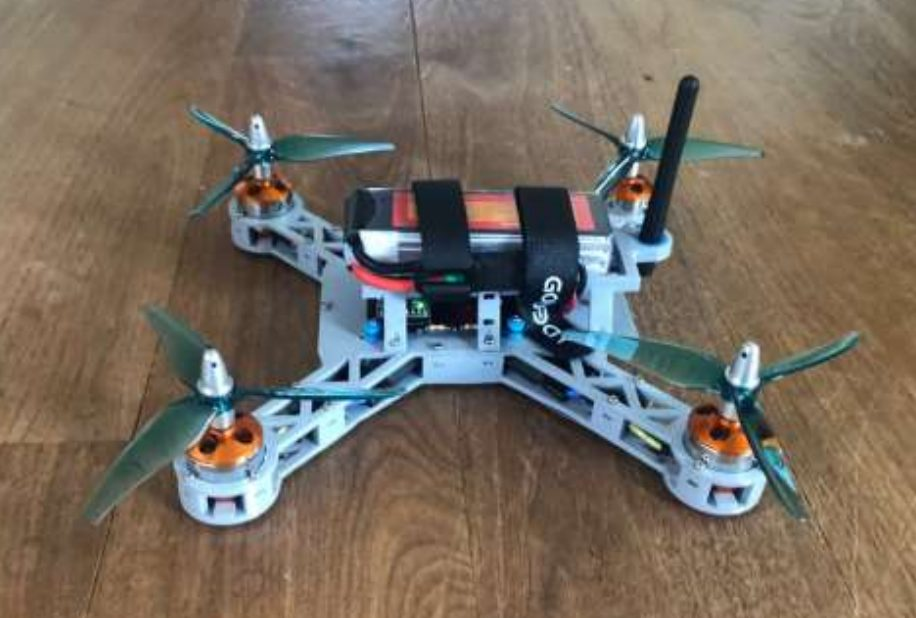
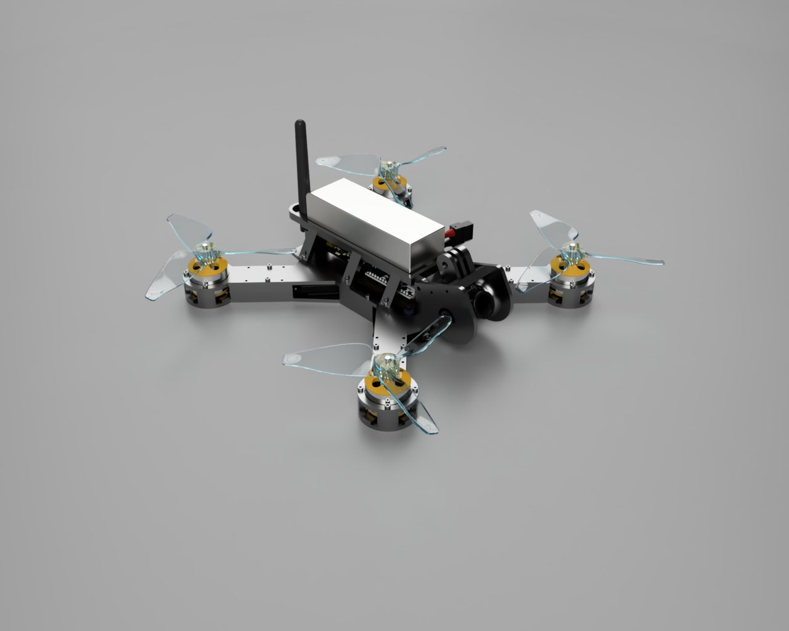
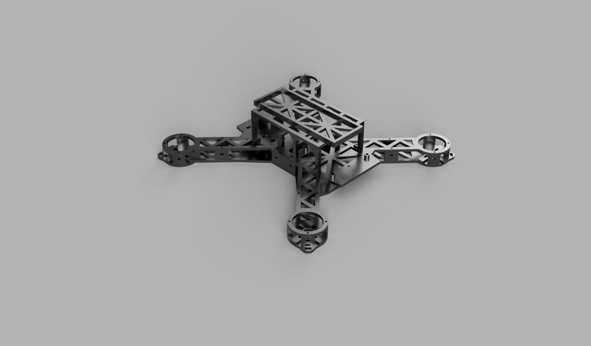
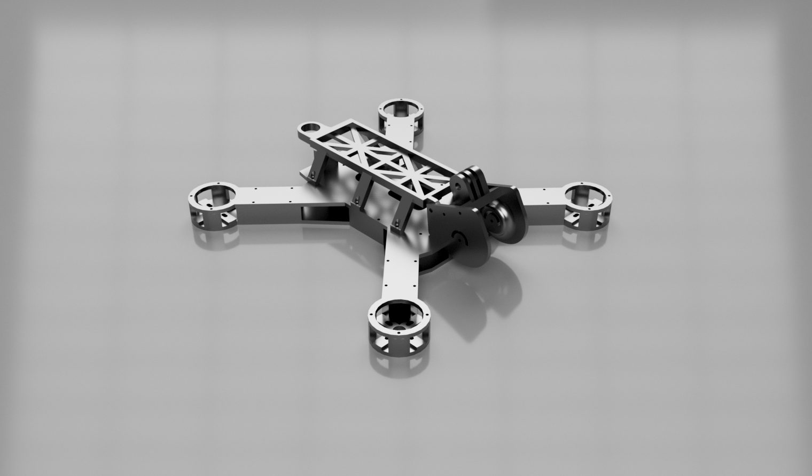
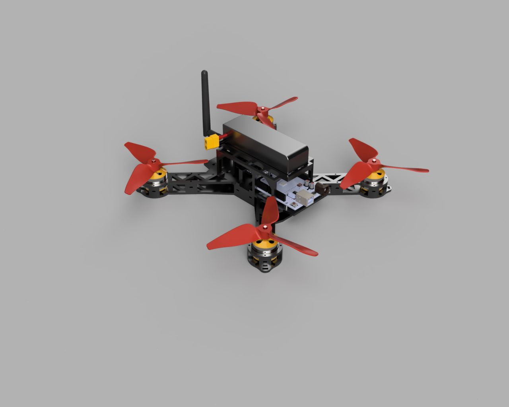

A ground-up build involving the design, fabrication, and programming of both a quadcopter and its controller.
Testing unveiled structural issues that prevented the quadcopter from functioning. A 3D-printed frame reinforced with aluminum beams was designed to maximize strength, which solved the issue.
Implemented a PID + feedforward control loop in C++ for control and stability. Inexpensive motors with inconsistent voltage-to-thrust ratios made tuning the PID loop take significantly longer than expected.
Messy wiring caused inconsistent performance, which drove the development of a custom PCB to consolidate wiring and power distribution — significantly reducing weight and failure points.
Modeled and assembled a custom handheld controller using an Arduino-based RF communication protocol to interface with the drone.



